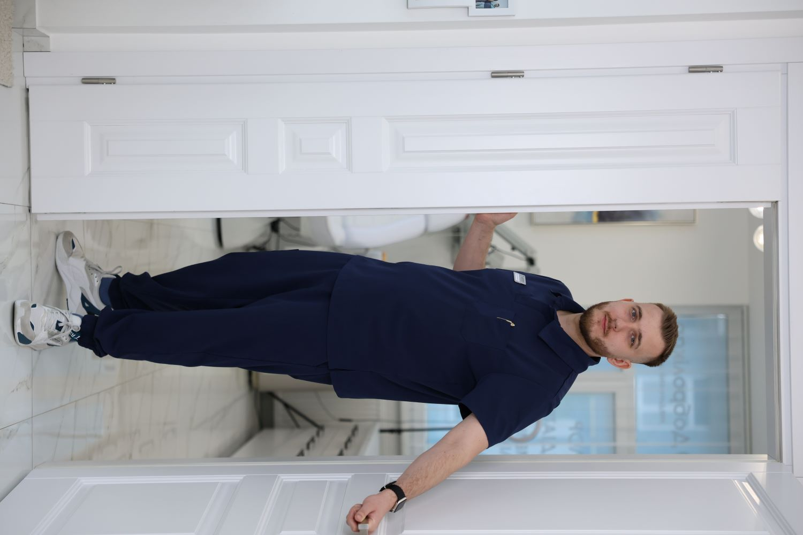

ЛОР, офтальмологія, алергологія та слух — для дорослих і дітей. Працюємо швидко, надійно і з сучасним обладнанням.
Вузькоспеціалізована клініка лікування захворювань вуха, горла, носа та очей для дорослих та дітей.
Комплексна діагностика зору, лікування захворювань очей, підбір окулярів та контактних лінз для дорослих та дітей.
Записатись →Діагностика та лікування захворювань вуха, горла та носа. Сучасне обладнання та ефективні методи лікування.
Записатись →Діагностика алергічних захворювань, розробка індивідуальних схем лікування та профілактики.
Записатись →Широкий спектр діагностичних та лікувальних процедур для виявлення та корекції порушень слуху у дорослих та дітей.
Записатись →Діагностика слуху, слухопротезування, підбір слухових апаратів дітям та дорослим, комп'ютерне програмування апаратів.
Записатись →Підбір окулярів для корекції зору, сонцезахисних окулярів, контактних лінз, окулярів з комп'ютерним захистом.
Записатись →Найкращий лікар-отоларинголог Іванович Юрій Васильович! Наша дитинка маленька. Лікар має підхід до маленьких пацієнтів, в поліклініці сучасне обладнання, все чистеньке, приємний персонал. Вже не вперше звертаємось. Рекомендую із власного досвіду!
Прекрасний досвід походу до лікаря ЛОРа. Абсолютно безболісна процедура огляду ендоскопом, лікар Юрій Васильович все розказав і пояснив план лікування. Я дуже задоволена. Буду радити своїм рідним!
Відвідували дитячого офтальмолога у Добролікар. Лікарка Анна Михайлівна була дуже уважна і доброзичлива, легко знайшла підхід до дитини та все зрозуміло пояснила. Сама клініка є чистенька та гарна, персонал дуже привітний. Рекомендуємо!
Дуже гарна нова клініка! Юрій Васильович чудовий і уважний лікар, швидко і професійно провів огляд дитини і призначив лікування! Персонал уважний і супер клієнтоорієнтований. Обов'язково звернемось знову!
Чудова клініка, сучасне обладнання, гарне обслуговування. Юрій Васильович наш рятівник — чуйний, виважений, досвідчений лікар з сучасним підходом до лікування. Рекомендую!
Чудова приватна клініка. Звернувся з болем у вусі — сучасне обладнання з виводом на екран вразило, професійна консультація лікаря та вирішення проблеми одразу на місці без зайвих черг. Рекомендуємо!
Дуже класний підхід до діток! Лікар Юрій Васильович прекрасно налагоджує контакт з дітьми — це сприяє спокійному процесу огляду. Професійно проводить лікувальні маніпуляції! Ми дуже задоволені. Дякуємо! Рекомендуємо!
Чудова клініка. Юрій Васильович найкращий лікар — швидко знайшов причину частого захворювання донечки. Ми дуже раді, що потрапили саме до нього!
Найкращий лікар-отоларинголог Іванович Юрій Васильович! Наша дитинка маленька. Лікар має підхід до маленьких пацієнтів, в поліклініці сучасне обладнання, все чистеньке, приємний персонал. Вже не вперше звертаємось. Рекомендую із власного досвіду!
Прекрасний досвід походу до лікаря ЛОРа. Абсолютно безболісна процедура огляду ендоскопом, лікар Юрій Васильович все розказав і пояснив план лікування. Я дуже задоволена. Буду радити своїм рідним!
Відвідували дитячого офтальмолога у Добролікар. Лікарка Анна Михайлівна була дуже уважна і доброзичлива, легко знайшла підхід до дитини та все зрозуміло пояснила. Сама клініка є чистенька та гарна, персонал дуже привітний. Рекомендуємо!
Дуже гарна нова клініка! Юрій Васильович чудовий і уважний лікар, швидко і професійно провів огляд дитини і призначив лікування! Персонал уважний і супер клієнтоорієнтований. Обов'язково звернемось знову!
Чудова клініка, сучасне обладнання, гарне обслуговування. Юрій Васильович наш рятівник — чуйний, виважений, досвідчений лікар з сучасним підходом до лікування. Рекомендую!
Чудова приватна клініка. Звернувся з болем у вусі — сучасне обладнання з виводом на екран вразило, професійна консультація лікаря та вирішення проблеми одразу на місці без зайвих черг. Рекомендуємо!
Дуже класний підхід до діток! Лікар Юрій Васильович прекрасно налагоджує контакт з дітьми — це сприяє спокійному процесу огляду. Професійно проводить лікувальні маніпуляції! Ми дуже задоволені. Дякуємо! Рекомендуємо!
Чудова клініка. Юрій Васильович найкращий лікар — швидко знайшов причину частого захворювання донечки. Ми дуже раді, що потрапили саме до нього!
Знайдіть відповідь нижче або телефонуйте нам.
Адреса: м. Львів, вул. Янева, 25
Телефон: +38 (093) 930-73-74
